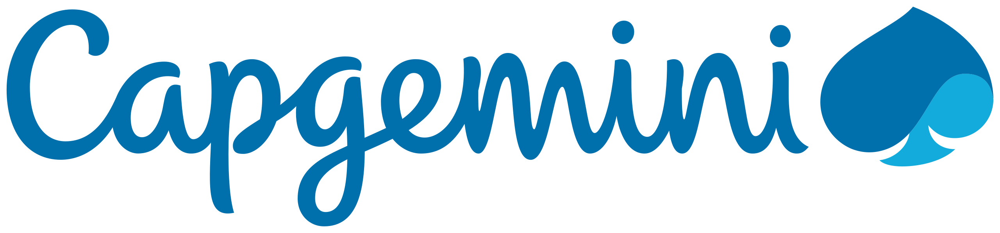

Work Experience
Data Analyst/Webmaster
Indiana Department of Insurance
February 2024 - Present
.png)
As a Data Analyst/Webmaster at the Indiana Department of Insurance, I spearheaded the development of a comprehensive Mine Subsidence Database for streamlining claims management. Leveraging technologies like Excel, VBA, Python, and Access, I extracted data from over 7,000 email attachments, performed data cleaning and transformation, and loaded 200,000 rows into an Access database through an ETL pipeline. Additionally, I designed an intuitive Access form-based UI with a SQL backend, enabling users to navigate interactive forms and streamline the claims process efficiently.
Exhibiting a commitment to operational excellence, I optimized website maintenance by resolving over 90% of known issues through website analytics tools and standardized content management using Smartsheet forms. Automation played a pivotal role as I automated the organization of 2,000+ enforcement documents into folders, reducing purge time from 2 weeks to 30 minutes. Furthermore, I generated interactive Power BI dashboards visualizing key claims-related KPIs, sourcing data from multiple databases through ETL processes and SQL queries, empowering data-driven decision-making.
Data Science Research Aide
Arizona State University
June 2023 - December 2023
In my recent role, I spearheaded a volunteer-driven initiative leveraging YOLO v5 and YOLO v8 for real-time detection of diabetes-related medical devices in online videos. Handling large datasets, I used tools like Beautiful Soup and RoboFlow to annotate around 5000 images, contributing significantly to the development of a robust dataset crucial for model training and validation.
Taking charge of information accuracy, I validated details on over 50 websites, ensuring trustworthy resources for informed healthcare decisions. This task not only showcased my commitment to data verification but also resulted in a notable 40% increase in website credibility.
"Yash is an extraordinary learner and professional with outstanding abilities in data mining, text mining, and NLP. His dedication to rigorous analysis, structured problem-solving, exceptional communication skills, and the ability to connect with cross-functional colleagues make him an ideal candidate for a leadership role demanding technical excellence."
- Prof. Xiao Liu, Supervisor and Asst. Professor, W. P. Carey School of Business
Business Analyst
Capgemini
January 2021 - June 2022
In my capacity as a Business Analyst at Capgemini, I played a pivotal role in collaborating with cross-functional SAP ERP application maintenance and support teams, where I adeptly translated intricate business objectives into technical requirements. Serving as a liaison between business users and support engineers for global clients in energy, telecom, and manufacturing, I honed my skills in SAP S4, BW, HR, and HANA DB architecture oversight. This encompassed performing crucial maintenance, implementing corrective measures on Master Data and production systems, leading to a substantial 50% reduction in system downtime. Making me proficient in optimizing operational efficiency.
My analytical prowess came to the forefront as I extracted and analyzed performance metrics from 10 SAP environments, utilizing SQL, Excel, and HANA. Delivered comprehensive data-driven insights through dashboards and reports to project leadership and client side decision makers, empowering informed decision-making and realizing substantial cost savings of $50K. Additionally, my commitment to operational excellence shone through as I excelled in task planning, promptly addressing stakeholder requests through various communication channels and ServiceNow tickets. Within just three months, I successfully enhanced operational efficiency and streamlined processes, achieving a remarkable 40% reduction in ticket backlog.
"Yash's exceptional blend of technical prowess and soft skills at Capgemini was truly remarkable. His competence in SAP administration, commitment to ownership, and effective leadership adopting Agile practices stood out. Stakeholders at all levels praised Yash's responsible communication, making him a valuable asset. I confidently endorse Yash, a skilled team player with proven technical expertise and collaborative leadership."
- Vinod Thakre, Former Manager
"Yash's remarkable enthusiasm and quick learning abilities as a fresher in our project left a lasting impression. His commendable sense of responsibility was evident in mastering complex SAP functionalities, including tasks like Patch Upgrades and Disaster Recovery execution. Yash swiftly became the go-to person for our internal team and earned accolades from Client Service Owner and Vendor Manager for his excellent client handling skills. I am confident that Yash will continue to excel and outperform in all his future endeavors."
- Jyotiprakash Sahoo, Former Manager
Management Intern
Delta Systems & Peripherals Ltd.
June 2018 - July 2018
During my tenure as a Management Intern at Delta Systems Ltd. in Rajkot, India, I harnessed my analytical skills to identify and capitalize on opportunities for cost savings and process enhancements. Leveraging data analytics and visualization tools, I successfully contributed to INR100,000 in savings by implementing strategic improvements. Collaborating seamlessly with cross-functional teams, I gained invaluable experience in network infrastructure management, acquiring a nuanced understanding of complex organizational dynamics.
In this role, I excelled in developing data-driven insights, utilizing tools such as MS Excel, MS Word, and MS PowerPoint to create compelling communication materials for internal stakeholders. This not only improved overall efficiency but also ensured a clear understanding of project goals among team members.